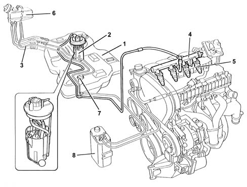
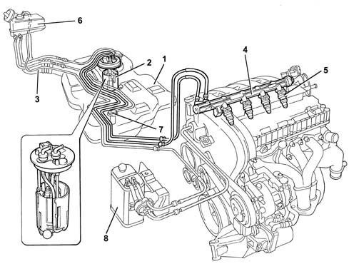
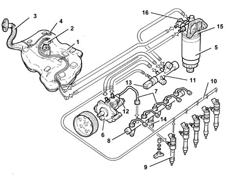
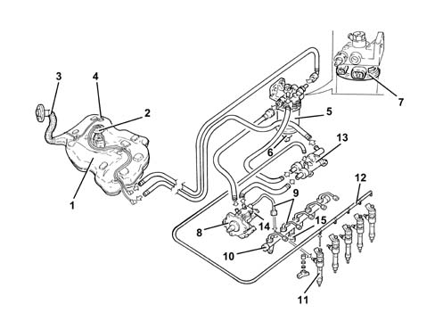
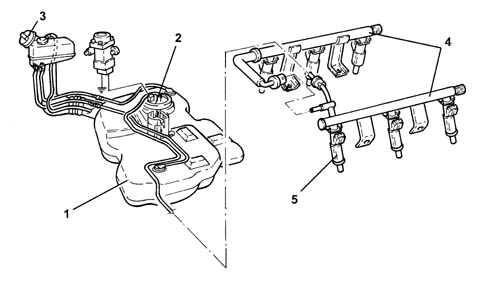
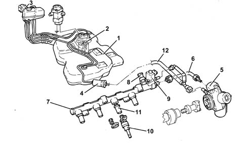
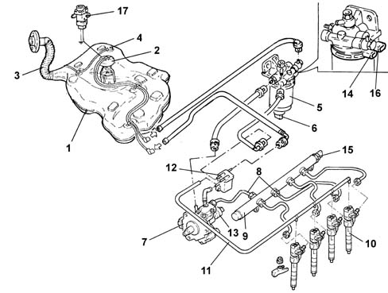
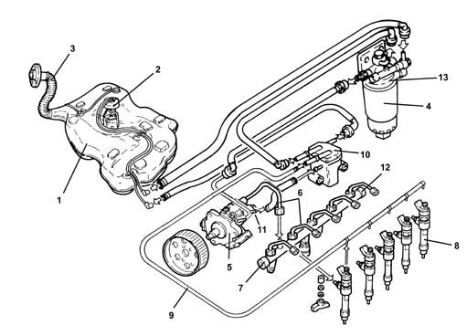

Introduction - FUEL TANK AND PIPES
- Path
- Descriptions > 10 ENGINE > 1040 FUEL TANK AND PIPES > Introduction - FUEL TANK AND PIPES
- Kind
- system description
- Applies to
- engines: 1.6 TS , 1.8 TS, 2.0 JTS, 2.5 V6, 3.2 V6, 1.9 JTD 8v , 1.9 JTD 16v, 2.0 JTS, 2.4 JTD 10v, 2.4 JTD 20v; all production periods
- Interactive page
- https://sloeber94.github.io/elrnDB-a156/en/#/3239196
Applies to: engines: 1.6 TS ; all production periods
The fuel system is of the "returnless" type, i.e. with only one connecting pipe between the fuel tank and engine.
This allows the system:
- to minimize the possibility of the vehicle catching fire in the event of an accident
- to reduce fuel vapour emissions into the atmosphere.
The fuel tank, located in front of the rear axle, is of a plastic material with high mechanical strength.
The fuel pump is enclosed in a cage which also contains:
- fuel pressure regulator
- fuel gauge sender unit
- the fuel filter
The system comprises an inertial switch which cuts off the supply from the fuel pump in the event of a crash.
Fuel system

1, Fuel tank 2, Immersed pump unit complete with fuel gauge sender unit 3, Fuel filler pipe 4, Fuel manifold pipe 5, Injectors (see 1056) 6, Fuel vapour separator (see 1080) 7, Multi-purpose valve (see 1080) 8, Activated-charcoal filter (see 1080)
Applies to: engines: 1.6 TS ; all production periods
The fuel tank, located in front of the rear axle, is of a plastic material with high mechanical strength.
The fuel pump is enclosed in a cage which also contains:
- fuel gauge sender unit
- the fuel filter
The system comprises an inertial switch which cuts off the supply from the fuel pump in the event of a crash.
Fuel system

1, Fuel tank 2, Immersed pump unit complete with fuel gauge sender unit 3, Fuel filler pipe 4, Fuel manifold pipe (with built-in pressure regulator) 5, Injectors (see See subassembly 1056 PETROL INJECTION SYSTEM ) 6, Fuel vapour separator (see See subassembly 1080 EXHAUST EMISSION CONTROL SYSTEM ) 7, Multi-purpose valve (see See subassembly 1080 EXHAUST EMISSION CONTROL SYSTEM ) 8, Activated-charcoal filter (see See subassembly 1080 EXHAUST EMISSION CONTROL SYSTEM )
Applies to: engines: 2.5 V6; all production periods
CONSTRUCTION FEATURES
The fuel supply system is divided into a low pressure circuit and a high pressure circuit.
The low pressure circuit consists of:
- immersed auxiliary electric pump
- diesel filter
- return manifold.
The high pressure circuit consists of:
- pressure pump ()
- distribution manifold ().
Fuel system
-

1, Fuel tank 2, Immersed pump unit complete with fuel gauge sender unit 3, Fuel filler pipe 4, Multi-purpose valve 5, Diesel filter cartridge 6, Pressure pump 7, High pressure pipes 8, Distribution manifold 9, Injectors 10, Injector recirculation 11, Return (low pressure) manifold 12, Pressure regulator 13, Fuel temperature sensor 14, Fuel pressure sensor 15, Diesel heater 16, Thermal switch
Applies to: engines: 2.5 V6; all production periods; only with equipment: Euro 3
FUEL SUPPLY SYSTEM
.

1 - Fuel tank 2 - Immersed pump unit complete with fuel gauge sender unit 3 - Fuel filler pipe 4 - Multi-purpose valve 5 - Fuel filter cartridge 6 - Water in fuel filter sensor 7 - Fuel heater with integrated fuel temperature sensor 8 - Pressure pump 9 - High pressure pipes 10 - Distribution manifold 11 - Injectors 12 - Injectors recirculation 13 - Return (low pressure) manifold 14 - Pressure regulator 15 - Fuel pressure sensor
Applies to: engines: 3.2 V6; all production periods
CONSTRUCTION FEATURES
The fuel system is of the 'returnless' type, i.e. with only one connecting pipe between the fuel tank and engine.
This makes it posible:
- to minimize the possibility of the vehicle catching fire in the event of an accident
- to reduce fuel vapour emissions into the atmosphere.
The fuel tank, located in front of the rear axle, is made from a plastic material with high mechanical strength.
The electric fuel pump is contained in the casing which also incorpotates the:
- fuel pressure regulator
- fuel gauge sender unit
- fuel filter.
The system is equipped with an inertia switch which, in the case of an impact to the vehicle, cuts off the supply from the electric fuel pump.
The pipes are secured to the underbody with special collars and enclosed by protections.
FUEL SUPPLY SYSTEM

1 - Fuel tank 2 - Immersed pump unit complete with fuel gauge sender unit 3 - Fuel filler pipe 4 - Fuel manifold pipe 5 - Fuel injectors
Applies to: engines: 1.9 JTD 8v , 2.4 JTD 10v; all production periods
The fuel supply system is divided into a low pressure circuit and a high pressure circuit.
The low pressure circuit consists of:
- immersed auxiliary electric pump
- diesel filter
- return manifold.
The high pressure circuit consists of:
- pressure pump ()
- distribution manifold ().
Fuel system
-
1, Fuel tank 2, Immersed pump unit complete with fuel gauge sender unit 3, Fuel filler pipe 4, Multi-purpose valve 5, Diesel filter cartridge 6, Pressure pump 7, High pressure pipes 8, Distribution manifold 9, Injectors 10, Injector recirculation 11, Return (low pressure) manifold 12, Pressure regulator 13, Fuel temperature sensor 14, Fuel pressure sensor 15, Diesel heater 16, Thermal switch
Applies to: engines: 1.9 JTD 8v , 2.4 JTD 10v; all production periods; only with equipment: Euro 3
FUEL SUPPLY SYSTEM
.
1 - Fuel tank 2 - Immersed pump unit complete with fuel gauge sender unit 3 - Fuel filler pipe 4 - Multi-purpose valve 5 - Fuel filter cartridge 6 - Water in fuel filter sensor 7 - Fuel heater with integrated fuel temperature sensor 8 - Pressure pump 9 - High pressure pipes 10 - Distribution manifold 11 - Injectors 12 - Injector recirculation 13 - Return (low pressure) manifold 14 - Pressure regulator 15 - Fuel pressure sensor
Applies to: engines: 2.0 JTS, 2.0 JTS; all production periods
CONSTRUCTION FEATURES
The fuel supply system is divided into a low pressure circuit and a high pressure circuit.
The low pressure circuit consists of:
- submerged auxiliary pump complete with fuel level gauge, pressure regulator and fuel filter
- external fule filter
The high pressure circuit consists of:
- pressure pump
- high pressure pipe (to be replaced whenever disassembled);
- distribution manifold (rail) with pressure regulator and fuel pressure sensor;
- injectors.
The pressure regulator incorporated in the fuel pump assembly is calibrated at 4.5 bar.
With the ignition ON, the pressure of 4.5 bar is present throughout the low pressure and high pressure lines and the pressure regulator is closed in these conditions.
Starting takes place with the pressure in the rail at around 4.5 bar because the high pressure pump is not capable of supplying high pressures instantly.
When the engine is started, durin idling, the fuel pressure in the rail is around 50 bar.
During operation, the pressure in the rail can reach a maximum value of 100 bar depending on the engine load and the performance required by the driver.
When the engine is switched off, the pressure in the rail gradually decreases (via the high pressure pump) until it reaches 4.5 bar (pressure regulator setting).
The maximum pressure produced by the high pressure pump is around 120 bar (if the pressure regulator is stuck).
The system is equipped with an inertia switch which, in the case of an impact to the vehicle, cuts off the supply from the electric fuel pump.
The pipes are secured to the underbody with special collars and enclosed by protections.
FUEL SUPPLY SYSTEM

1 - Fuel tank 2 - Immersed pump unit complete with fuel gauge sender unit 3 - Fuel filler pipe 4 - Supplementary fuel filter 5 - High pressure fuel pump 6 - High pressure pipe 7 - Distribution manifold 8 - Pressure sensor 9 - Pressure regulator 10 - Fuel injectors 11 - Spacer 12 - Low pressure pipe
Applies to: engines: 1.9 JTD 16v; all production periods
CONSTRUCTION FEATURES
This fuel injection system uses an electronically-controlled high injection pressure and a fuel supply method achieved through a main injection and one or two pilot injections (depending on the engine operating conditions) electronically controlled by the injection control unit through the injector.
The pressure value represents the fundamental parameter for optimum fuel consumption and exhaust fumes.
Pilot injection makes pre-heating the combustion chamber possible to prevent the pressure peak caused by rapid combustion thereby ensuring smooth operation.
The adjustment of the injection pressure is made possible thanks to the construction features of the system which has a pressure pump and separate injectors both managed by a control unit. In this way the injection pressure does not depend on the engine rotation speed
The main features of the fuel supply system are:
- high injection pressure (up to 1400 bar);
- possibility of modulating the injection pressure from 150 to 1400 bar in all engine operating conditions
- introduction of fuel up to 100 mm3/cycle at a speed of between 100 and 6000 rpm
- precise injection control, for both injection advance and duration of injection
- one or two pilot injections, before T.D.C., managed in relation to the engine rpm and load which allows the pressure to be distributed evenly in the combustion chamber with a reduction in the noise level.
COMPOSITION
The fuel supply system is divided into a low pressure circuit and a high pressure circuit.
The low pressure circuit consists of:
- an auxiliary electric pump immersed in the tank
- fuel filter.
- the fuel return manifold pipe
- the connecting pipes .
The high pressure circuit consists of:
- the pressure pump
- the single fuel manifold pipe
- injectors;
- the connecting pipes.

1 - Fuel tank 2 - Immersed pump unit complete with fuel gauge sender unit 3 - Fuel filler pipe 4 - Multi-purpose valve 5 - Fuel filter filter element 6 - Water in fuel filter sensor 7 - Pressure pump Characteristic of working principle 1060 DIESEL FUEL INJECTION 8 - High pressure pipes 8 - Single fuel manifold pipe Characteristic of working principle 1060 DIESEL FUEL INJECTION 10 - Injectors Characteristic of working principle 1060 DIESEL FUEL INJECTION 11 - Pipe from injectors to fuel return manifold 12 - Fuel return manifold 13 - Pressure regulator Characteristic of working principle 1060 DIESEL FUEL INJECTION 14 - Fuel temperature sensor Characteristic of working principle 1060 DIESEL FUEL INJECTION 15 - Fuel pressure sensor Characteristic of working principle 1060 DIESEL FUEL INJECTION 16 - Fuel heater Characteristic of working principle 1044 FUEL CIRCUIT PUMP/AND DEVICES 17 - Inertia switch
Applies to: engines: 2.4 JTD 20v; all production periods
SPECIFCATIONS
SYSTEM SPECIFICATION
Devices adopted
This fuel injection system uses an electronically-controlled high injection pressure. Fuel is supplied by a pilot injection electronically controlled by the electronic injection control unit via the injector (rather than managed by the injection pump as in earlier direct injection engines).
The pressure value represents the fundamental parameter for optimum fuel consumption and exhaust fumes.
Pilot injection makes pre-heating the combustion chamber possible to prevent the pressure peak caused by rapid combustion thereby ensuring smooth operation.
The adjustment of the injection pressure is made possible thanks to the construction features of the system which has a pressure pump and separate injectors both managed by a control unit. In this way the injection pressure does not depend on the engine rotation speed
Performance
The main features of the fuel supply system are:
- high injection pressure (up to 1400 bar);
- possibility of modulating the injection pressure from 150 to 1400 bar in all engine operating conditions
- introduction of fuel up to 100 mm[sup3 ]/cycle at a speed of between 100 and 6000 rpm
- precise injection control, for both injection advance and duration of injection
- one or two pilot injections, before T.D.C., managed in relation to the engine rpm and load which allow the pressure derivative in the combustion chamber to be reduced, with a reduction in the noise level.
COMPOSITION
STRUCTURE
The fuel supply system is divided into a low pressure circuit and a high pressure circuit.
The low pressure circuit consists of:
- an auxiliary electric pump submerged in the tank
- the fuel filter
- the fuel return manifold pipe
- the connecting pipes .
The high pressure circuit consists of:
- the pressure pump
- the single fuel manifold pipe
- the injectors
- the connecting pipes.
FUEL SUPPLY SYSTEM

1. Fuel tank 2. Submerged pump unit complete with fuel gauge sender unit 3. Fuel filler pipe 4. Fuel filter filter element 5. High pressure pump 6. High pressure pipes 7. Single fuel manifold pipe 8. Injectors 9. Pipe from injectors to fuel return manifold pipe 10. Fuel return manifold pipe 11, Pressure regulator 12. Fuel pressure sensor 13. Fuel heater with built-in fuel temperature sensor